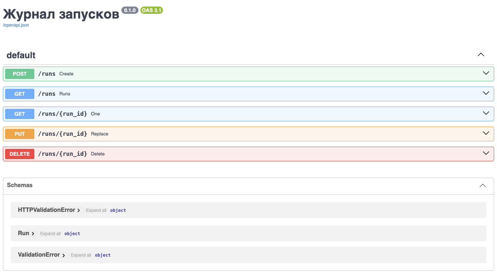

Веб-технологии
Почти всё сетевое взаимодействие программ в работе физика происходит на прикладном уровне. Каталог наблюдений и база публикаций отвечают на запросы HTTP данными в JSON, таблица параметров установки нередко существует только как веб-страница, а журнал запусков удобно открыть коллегам в виде небольшого веб-сервиса, к которому они обращаются из своих скриптов.
В настоящей главе рассматриваются прикладные протоколы — система доменных имён, HTTP и TLS — и работа с ними из Python: сокет, библиотеки requests и httpx, скрапинг страниц и обращение к API, а также собственный веб-сервис на FastAPI, перед которым работает nginx. Адреса, маршруты, порты и протокол TCP, поверх которых работают эти протоколы, рассмотрены в главе «Компьютерные сети».
Листинги главы выполнены на той же машине, что и листинги главы «Компьютерные сети», — виртуальной машине под Ubuntu 24.04 с Python 3.12, requests 2.34, httpx 0.28, FastAPI 0.142, uvicorn 0.54, curl 8.5 и nginx 1.31, на которой записаны демонстрации лекции «Введение в веб»; выводы повтора запроса и асинхронных запросов взяты из этих записей. Серверы слушают петлевой адрес 127.0.0.1, поэтому на другой машине выводы те же, кроме времени и случайных номеров портов, а также ответов серверов в интернете. Пример с публичным API INSPIRE-HEP выполнен на рабочем компьютере под Python 3.11 с той же версией requests.
Прикладной уровень
Слайды к главе. DNS и DNS поверх HTTPS, устройство URL, запрос и ответ HTTP, методы и коды состояния, TLS и собственный сертификат изложены также в четвёртой части лекции «Введение в веб» с демонстрациями в терминале; слайды лекции доступны на сайте книги и в PDF.
На прикладном уровне работают сами программы и их протоколы: DNS переводит имена в адреса, HTTP переносит данные, TLS их шифрует.
DNS: из имён в адреса
Компьютеры адресуют друг друга числами, а люди — именами. Связь между ними обеспечивает система доменных имён (DNS), представляющая собой распределённую базу с иерархией зон. Рассмотрим путь запроса: программа обращается к рекурсивному резолверу: провайдера, институтскому или публичному, например 1.1.1.1. Тот при необходимости опрашивает корневой сервер, получает от него адреса серверов зоны com, от них — адреса серверов домена example.com, и уже авторитетный сервер домена сообщает искомую запись. Ответ кешируется на время TTL, указанное в записи, поэтому повторный запрос резолвер обслуживает из кеша, а изменение записи распространяется не мгновенно, а по мере истечения TTL в кешах.
программа ──► рекурсивный резолвер ──► корневой сервер : серверы зоны com
(кеш на время TTL) ──► сервер зоны com : серверы example.com
──► сервер example.com : запись A
Чаще всего встречаются следующие типы записей.
| Тип | Что содержит |
|---|---|
A / AAAA | адрес IPv4 / IPv6 для имени |
CNAME | псевдоним, отсылающий к другому имени |
MX | почтовые серверы домена с приоритетами |
TXT | произвольный текст; используется для проверки владения доменом и правил почты SPF |
DNS является самым частым источником жалоб «ничего не работает». Прежде чем искать ошибку в собственной программе, необходимо проверить командой dig example.com или nslookup example.com, разрешается ли имя.
Обычные запросы DNS идут по UDP открытым текстом, и любой узел на пути может их прочитать или подменить. DNS поверх HTTPS (DoH) передаёт тот же вопрос внутри HTTPS. Стандартный вид, который используют браузеры, описан в RFC 8484: запрос и ответ передаются двоичным сообщением DNS с типом application/dns-message. Резолверы Cloudflare и Google предлагают, кроме того, собственный формат с ответом в JSON, удобный для программ; воспользуемся им из Python.
import requests
DOH = 'https://1.1.1.1/dns-query'
TYPES = {1: 'A', 5: 'CNAME', 15: 'MX', 28: 'AAAA'}
for name, rtype in [('example.com', 'A'), ('www.github.com', 'A'), ('gmail.com', 'MX')]:
r = requests.get(DOH, params={'name': name, 'type': rtype},
headers={'Accept': 'application/dns-json'}, timeout=5)
r.raise_for_status()
for rec in r.json()['Answer']:
print(rec['name'], rec['TTL'], TYPES[rec['type']], rec['data'])
example.com 252 A 104.20.23.154
example.com 252 A 172.66.147.243
www.github.com 3569 CNAME github.com.
github.com 29 A 140.82.121.4
gmail.com 277 MX 10 alt1.gmail-smtp-in.l.google.com.
gmail.com 277 MX 40 alt4.gmail-smtp-in.l.google.com.
gmail.com 277 MX 20 alt2.gmail-smtp-in.l.google.com.
gmail.com 277 MX 5 gmail-smtp-in.l.google.com.
gmail.com 277 MX 30 alt3.gmail-smtp-in.l.google.com.
В каждой строке — имя, оставшееся время жизни записи в кеше резолвера в секундах, тип и значение. Имя www.github.com оказалось псевдонимом: запись CNAME указывает на github.com, и резолвер сразу добавил его адрес. У gmail.com пять почтовых серверов с приоритетами от 5 до 40; отправитель почты пробует сначала сервер с наименьшим числом.
Сама программа разрешает имя функцией socket.getaddrinfo, которая пользуется тем же механизмом, что и все программы системы: файлом /etc/hosts и резолвером. В отличие от socket.gethostbyname, работающей только с IPv4, она возвращает адреса обоих семейств. В стандартной установке Ubuntu файл /etc/hosts сопоставляет имени localhost только адрес 127.0.0.1, а петлевой адрес IPv6 записан под именем ip6-localhost:
import socket
for name in ('localhost', 'ip6-localhost'):
for family, _, _, _, addr in socket.getaddrinfo(name, 8000, proto=socket.IPPROTO_TCP):
print(name, family.name, addr)
localhost AF_INET ('127.0.0.1', 8000)
ip6-localhost AF_INET6 ('::1', 8000, 0, 0)
URL: адрес ресурса
Адрес, вводимый в браузер, устроен по единой схеме (RFC 3986).
схема://хост:порт/путь?запрос#фрагмент
https://api.example.org:443/v1/runs?limit=10#top
Каждая часть предназначена своему уровню. Схема https означает HTTP поверх TLS. Имя хоста DNS превращает в IP-адрес. Порт указывает транспортному уровню программу, слушающую на сервере, и обычно опускается: для https подразумевается 443, для http — 80. Путь и параметры запроса адресуют конкретный ресурс и передаются серверу. Фрагмент после решётки на сервер не отправляется и нужен только браузеру, чтобы прокрутить страницу к нужному месту. Первая часть называется схемой, а не протоколом, потому что не все адреса относятся к вебу: ftp://ftp.example.org/files, mailto:user@example.org, file:///home/user/data.csv.
Символы, недопустимые в адресе, кодируются процентами: байт записывается знаком % и двумя шестнадцатеричными цифрами, пробел — как %20, а кириллица — байтами своей кодировки UTF-8. В параметрах запроса, собранных по правилам HTML-форм, пробел записывается знаком +; так поступает и requests. Разбор и сборку адресов обеспечивает модуль urllib.parse.
from urllib.parse import quote, urlsplit
import requests
u = urlsplit('https://api.example.org:443/v1/runs?limit=10#top')
print(u.scheme, u.hostname, u.port, u.path, u.query, u.fragment)
print(quote('/data/ток 1.csv'))
req = requests.Request('GET', 'https://api.example.org/v1/runs',
params={'q': 'beam current', 'limit': 10}).prepare()
print(req.url)
https api.example.org 443 /v1/runs limit=10 top
/data/%D1%82%D0%BE%D0%BA%201.csv
https://api.example.org/v1/runs?q=beam+current&limit=10
HTTP: обмен с сервером
На HTTP основано почти всё сетевое взаимодействие программ. Клиент отправляет запрос, сервер отвечает. Состояния между запросами протокол не хранит, каждый запрос самодостаточен. В HTTP/1.1 запрос и ответ представляют собой текст; HTTP/2 (RFC 9113) и HTTP/3 (RFC 9114) передают те же поля в двоичных кадрах, а смысл сообщений у всех версий общий (RFC 9110).
HTTP-запрос и ответ
Запрос состоит из стартовой строки с методом, путём и версией протокола, заголовков вида «имя: значение», пустой строки и необязательного тела. Строки разделяются парой символов CR LF, которые cat -A показывает как ^M$. В HTTP/1.1 обязателен заголовок Host: на одном адресе работает много сайтов, и сервер выбирает нужный по имени. Именно так устроен файл req.txt, созданный командой printf при разборе рукопожатия TCP в главе «Компьютерные сети»; отправим его тому же серверу, который раздаёт каталог www с файлом hello.txt и запущен там же командой python3 -m http.server 8000 --bind 127.0.0.1 --directory www. Утилита nc открывает TCP-соединение с портом 8000 и передаёт файл как есть.
$ cat -A req.txt
GET /hello.txt HTTP/1.1^M$
Host: localhost^M$
^M$
$ nc 127.0.0.1 8000 < req.txt
HTTP/1.0 200 OK
Server: SimpleHTTP/0.6 Python/3.12.3
Date: Sat, 03 Oct 2026 03:51:39 GMT
Content-type: text/plain
Content-Length: 13
Last-Modified: Sat, 03 Oct 2026 03:51:23 GMT
pulse 4.2 mA
Ответ устроен так же: статусная строка с версией и кодом, заголовки, пустая строка и тело, длину которого задаёт Content-Length, здесь — 13 байт. Встроенный сервер отвечает версией HTTP/1.0 на запрос HTTP/1.1 и после ответа закрывает соединение. Ключ -v утилиты curl показывает обмен с обеих сторон: строки со знаком > — отправленный запрос, со знаком < — полученный ответ.
$ curl -sv http://127.0.0.1:8000/nope 2>&1 | grep -E '^[<>] '
> GET /nope HTTP/1.1
> Host: 127.0.0.1:8000
> User-Agent: curl/8.5.0
> Accept: */*
>
< HTTP/1.0 404 File not found
< Server: SimpleHTTP/0.6 Python/3.12.3
< Date: Sat, 03 Oct 2026 03:51:39 GMT
< Connection: close
< Content-Type: text/html;charset=utf-8
< Content-Length: 335
<
Методы
Первое слово запроса — метод, он сообщает серверу, что требуется сделать с ресурсом.
| Метод | Действие | Безопасный | Идемпотентный |
|---|---|---|---|
GET | получить ресурс | да | да |
HEAD | получить только заголовки | да | да |
POST | отправить данные, создать ресурс | нет | нет |
PUT | создать или заменить ресурс целиком | нет | да |
PATCH | изменить часть ресурса | нет | не обязательно |
DELETE | удалить ресурс | нет | да |
Безопасный метод не меняет состояния сервера, поэтому GET и HEAD можно выполнять без опасений, а их ответы разрешено кешировать. Идемпотентный метод при повторе оставляет сервер в том же состоянии, что и один запрос, хотя ответ может отличаться: повторный DELETE того же ресурса получает 404, потому что ресурса уже нет. Поэтому клиенты и посредники автоматически повторяют после обрыва связи только идемпотентные запросы (RFC 9110, разд. 9.2.2). С POST так поступать нельзя: повторённый запрос создаст вторую запись. PATCH идемпотентен, только если так устроен сервер.
Коды состояния
Самым информативным в ответе является трёхзначный код в статусной строке. Достаточно помнить значение первой цифры:
| Код | Смысл | Типичные представители |
|---|---|---|
1xx | информационные | 100 Continue |
2xx | успех | 200 OK, 201 Created, 204 No Content |
3xx | перенаправление или указание взять сохранённую копию | 301 Moved Permanently, 302 Found, 304 Not Modified |
4xx | ошибка клиента | 400 Bad Request, 401 Unauthorized, 403 Forbidden, 404 Not Found, 408 Request Timeout, 422 Unprocessable Content, 429 Too Many Requests |
5xx | ошибка сервера | 500 Internal Server Error, 502 Bad Gateway, 503 Service Unavailable, 504 Gateway Timeout |
Отметим смысл наиболее частых кодов. Код 201 сообщает, что ресурс создан, 204 — что запрос выполнен и тела в ответе нет. При перенаправлении клиент идёт по адресу из заголовка Location, а 304 не перенаправляет: он отвечает на условный запрос и сообщает, что копия, сохранённая у клиента, ещё действительна. Код 401 означает, что требуется аутентификация, а 403 — что доступ запрещён, даже если клиент предъявил свои данные. Код 422 (прежнее название — Unprocessable Entity) означает, что запрос понят, но данные не прошли проверку. Коды 502 и 504 возвращает промежуточный сервер, когда сервер за ним ответил некорректно или не ответил вовсе.
Повтор имеет смысл при временных ошибках — 408, 429, 502, 503, 504 и обрыве соединения — и только для идемпотентных запросов либо запросов с ключом идемпотентности, по которому сервер распознаёт повторённый запрос. Пауза перед повтором растёт экспоненциально и со случайным разбросом, чтобы клиенты, получившие отказ одновременно, не повторяли запросы тоже одновременно, а число попыток ограничено; при 429 и 503 выжидают столько, сколько сервер указал в заголовке Retry-After. Остальные коды 4xx и 5xx, например 400, 404, 422, 500 и 501, требуют исправить запрос или сервер: повтор того же запроса их не устранит. Повторы, ключи идемпотентности и выбор пауз подробно рассматриваются в главе «Системный дизайн».
TLS: буква S в HTTPS
Обычный HTTP передаёт всё открытым текстом, включая пароли и токены, и любой узел на пути видит и может изменить содержимое. Протокол TLS, являющийся преемником SSL, обеспечивает шифрование соединения и проверку подлинности сервера по сертификату. Сертификат связывает имя сайта с открытым ключом и подписан удостоверяющим центром. Клиент проверяет подписи по цепочке промежуточных сертификатов до корневого, которому он доверяет; список доверенных корневых сертификатов поставляется с операционной системой или с библиотекой. Так клиент убеждается, что взаимодействует именно с тем сервером, за который тот себя выдаёт.
Версии SSL 2.0 и 3.0 запрещены (RFC 6176, RFC 7568), TLS 1.0 и 1.1 выведены из употребления в 2021 году (RFC 8996); применяются TLS 1.2 и 1.3. Версия 1.3 (RFC 8446) устанавливает защищённый канал за одно время туда и обратно. Удостоверяющий центр Let's Encrypt выдаёт сертификаты бесплатно и автоматически по протоколу ACME (RFC 8555), поэтому HTTPS стал нормой и для небольших сервисов.
Поверх TLS работают и новые версии HTTP. HTTP/2 передаёт много запросов одновременно в одном соединении, каждый в своём потоке, тогда как HTTP/1.1 в постоянном соединении передаёт их только по очереди. Однако все потоки HTTP/2 идут по одному соединению TCP, и потеря одного сегмента задерживает выдачу приложению всех следующих за ним данных. HTTP/3 работает поверх QUIC на UDP: потоки в нём доставляются независимо друг от друга, а установление соединения совмещено с рукопожатием TLS.
Собственный сертификат
Внутренний сервис лаборатории часто работает с сертификатом, не подписанным публичным центром: самоподписанным или выданным центром сертификации организации. Покажем работу с таким сертификатом на примере: скрипт mkcert.sh создаёт ключ на эллиптической кривой P-256 и самоподписанный сертификат для имени localhost сроком на сутки; владелец и издатель такого сертификата совпадают.
$ cat mkcert.sh
# Самоподписанный сертификат для localhost на сутки
openssl req -x509 -newkey ec -pkeyopt ec_paramgen_curve:P-256 -nodes -days 1 \
-subj /CN=localhost -addext subjectAltName=DNS:localhost \
-keyout key.pem -out cert.pem 2>/dev/null
$ sh mkcert.sh
$ openssl x509 -in cert.pem -noout -subject -issuer -enddate
subject=CN = localhost
issuer=CN = localhost
notAfter=Oct 4 03:48:39 2026 GMT
Команда openssl s_server поднимает TLS-сервер на порту 8443 с простой страницей состояния. Запрос curl без дополнительных параметров завершается с кодом выхода 60: сертификат не подписан ни одним доверенным центром, и проверка подлинности не проходит. Ключ --cacert указывает файл с сертификатом, которому клиент доверяет, и соединение устанавливается: в журнале curl видны версия TLSv1.3, шифр TLS_AES_256_GCM_SHA384, обмен ключами X25519 и владелец сертификата CN=localhost.
$ openssl s_server -accept 8443 -cert cert.pem -key key.pem -www -quiet &
$ curl -s https://localhost:8443/; echo "код выхода $?"
код выхода 60
$ curl -sv --cacert cert.pem https://localhost:8443/ -o /dev/null 2>&1 | grep -E 'SSL connection|subject:|^< HTTP'
* SSL connection using TLSv1.3 / TLS_AES_256_GCM_SHA384 / X25519 / id-ecPublicKey
* subject: CN=localhost
< HTTP/1.0 200 ok
Из Python шифрование добавляется обёрткой поверх обычного сокета. Контекст ssl.create_default_context включает проверку сертификата и имени сервера, а аргумент cafile добавляет к доверенным свой сертификат.
import socket
import ssl
context = ssl.create_default_context(cafile='cert.pem')
with socket.create_connection(('localhost', 8443)) as sock:
with context.wrap_socket(sock, server_hostname='localhost') as tls:
print(tls.version(), tls.cipher()[0])
tls.sendall(b'GET / HTTP/1.1\r\nHost: localhost\r\nConnection: close\r\n\r\n')
reply = b''
while chunk := tls.recv(4096):
reply += chunk
print(reply.split(b'\r\n', 1)[0])
TLSv1.3 TLS_AES_256_GCM_SHA384
b'HTTP/1.0 200 ok'
В requests тот же приём обеспечивает аргумент verify='cert.pem' или переменная окружения REQUESTS_CA_BUNDLE с путём к файлу сертификатов центра организации.
import requests
URL = 'https://localhost:8443/'
try:
requests.get(URL, timeout=5)
except requests.exceptions.SSLError as err:
print(type(err).__name__, 'CERTIFICATE_VERIFY_FAILED' in str(err))
r = requests.get(URL, verify='cert.pem', timeout=5)
print(r.status_code, r.reason)
SSLError True
200 ok
Аргумент verify=False отключает проверку целиком: шифрование остаётся, но защиты от подмены сервера больше нет, и любой узел на пути может выдать себя за сервер. В рабочем коде такая настройка недопустима: для внутреннего сервиса достаточно доверить клиенту конкретный сертификат или центр сертификации организации, как показано выше.
Клиент на Python
Слайды к главе. HTTP через сокет, requests с тайм-аутом и повтором, работа с API, скрапинг страниц и асинхронные запросы httpx изложены также в пятой части лекции «Введение в веб» с демонстрациями в терминале; слайды лекции доступны на сайте книги и в PDF.
Соберём сначала HTTP-запрос вручную: это позволяет увидеть, что протокол представляет собой текст, записанный в открытое TCP-соединение. В дальнейшем достаточно готовых библиотек: requests для обычных запросов и httpx там, где требуется асинхронность.
HTTP через сокет
Функция socket.create_connection открывает соединение, sendall отправляет строки запроса, а recv в цикле читает ответ, пока сервер не закроет соединение. Одного вызова recv недостаточно: он возвращает только те байты, которые уже пришли, а сервер отправляет заголовки и тело отдельными сегментами, как видно в перехвате tcpdump в главе «Компьютерные сети», так что одиночный recv нередко получает одни заголовки. Заголовок Connection: close просит сервер закрыть соединение после ответа; без него сервер HTTP/1.1 держит соединение открытым, и цикл не завершится. Сервер — тот же http.server с файлом hello.txt.
import socket
with socket.create_connection(('127.0.0.1', 8000)) as sock:
sock.sendall(b'GET /hello.txt HTTP/1.1\r\n'
b'Host: localhost\r\n'
b'Connection: close\r\n'
b'\r\n')
reply = b''
while chunk := sock.recv(4096): # b'' означает, что сервер закрыл соединение
reply += chunk
head, body = reply.split(b'\r\n\r\n', 1)
print(head.decode().splitlines()[0])
print(body)
HTTP/1.0 200 OK
b'pulse 4.2 mA\n'
Для полноценного клиента пришлось бы найти конец заголовков, дочитать тело по Content-Length или по блокам при Transfer-Encoding: chunked, учесть кодировку, обработать перенаправления, сжатие и шифрование. Поэтому сокеты остаются для собственных протоколов, например для телеметрии установки или текстовых команд SCPI, которыми управляют осциллографами и генераторами, а HTTP поручают библиотеке.
Библиотека requests
requests берёт на себя соединения, перенаправления, кодировки и разбор JSON. Параметры запроса задаёт словарь params, тело в JSON — аргумент json, а метод raise_for_status превращает ответ с кодом 4xx или 5xx в исключение HTTPError.
import requests
r = requests.get('http://127.0.0.1:8000/hello.txt', timeout=5)
print(r.status_code, r.headers['Content-Type'], r.encoding)
print(r.text, end='')
r = requests.get('http://127.0.0.1:8000/nope', timeout=5)
print(r.status_code, r.reason)
try:
r.raise_for_status()
except requests.HTTPError as err:
print(err)
200 text/plain ISO-8859-1
pulse 4.2 mA
404 File not found
404 Client Error: File not found for url: http://127.0.0.1:8000/nope
Отметим, что аргумент timeout обязателен: по умолчанию requests ждёт ответа сколь угодно долго, и зависший сервер останавливает ночной сбор данных навсегда. Кодировка ISO-8859-1 в выводе выбрана потому, что сервер не указал charset в заголовке Content-Type, а для текстовых типов без charset именно её предписывала прежняя редакция стандарта HTTP/1.1 (RFC 2616); к чему это приводит на русских страницах, показано в разделе о скрапинге.
Объект requests.Session хранит общие заголовки между запросами и переиспользует открытое TCP-соединение, что позволяет выполнить серию обращений к одному серверу заметно быстрее, чем столько же отдельных вызовов requests.get.
Тайм-аут и повтор
Повтор с растущей паузой обеспечивает адаптер сессии с объектом Retry из библиотеки urllib3, на которой построен requests. Адаптер повторяет запрос при сбоях соединения и при кодах из списка status_forcelist, удваивает паузу между попытками и учитывает заголовок Retry-After, которым сервер сообщает, сколько ждать, — по умолчанию для кодов 413, 429 и 503. При backoff_factor=0.5 паузы перед повторами составляют 0, 1, 2 и 4 с; аргумент backoff_jitter добавляет к каждой случайную добавку, а total ограничивает число попыток. По умолчанию Retry повторяет только идемпотентные методы — GET, HEAD, PUT, DELETE, OPTIONS и TRACE, — а POST не повторяет. Для сбора данных подходит, например, Retry(total=5, backoff_factor=0.5, backoff_jitter=0.5, status_forcelist=[408, 429, 502, 503, 504]).
Проверим поведение клиента на ненадёжном сервере. Скрипт flaky.py построен на http.server: путь /data на первые два запроса отвечает 503 Service Unavailable, а /slow отвечает только через 3 с.
"""Ненадёжный сервер: /data дважды отвечает 503, затем 200; /slow отвечает через 3 с."""
import json
import time
from http.server import BaseHTTPRequestHandler, ThreadingHTTPServer
hits = 0
class Handler(BaseHTTPRequestHandler):
def do_GET(self):
global hits
if self.path == "/slow":
time.sleep(3)
if self.path == "/data":
hits += 1
if hits <= 2:
self.send_error(503, "Service Unavailable")
return
body = json.dumps({"pressure_nPa": 41.7, "hits": hits}).encode()
self.send_response(200)
self.send_header("Content-Type", "application/json")
self.send_header("Content-Length", str(len(body)))
self.end_headers()
self.wfile.write(body)
ThreadingHTTPServer(("127.0.0.1", 8000), Handler).serve_forever()
Клиент retry.py сначала запрашивает /slow с тайм-аутом 1 с, а затем /data — через сессию с адаптером Retry, допускающим четыре повтора при коде 503.
"""Клиент с таймаутом и повтором запроса при 503."""
import time
import requests
from requests.adapters import HTTPAdapter
from urllib3.util import Retry
URL = "http://127.0.0.1:8000"
try:
requests.get(f"{URL}/slow", timeout=1)
except requests.Timeout as err:
print("таймаут 1 с:", type(err).__name__)
session = requests.Session()
retry = Retry(total=4, backoff_factor=0.5, status_forcelist=[503])
session.mount("http://", HTTPAdapter(max_retries=retry))
start = time.perf_counter()
r = session.get(f"{URL}/data", timeout=2)
print(r.status_code, r.json(), f"за {time.perf_counter() - start:.1f} с")
$ python3 flaky.py 2>server.log &
$ python3 retry.py
таймаут 1 с: ReadTimeout
200 {'pressure_nPa': 41.7, 'hits': 3} за 1.0 с
$ cat server.log
127.0.0.1 - - [02/Oct/2026 12:23:18] code 503, message Service Unavailable
127.0.0.1 - - [02/Oct/2026 12:23:18] "GET /data HTTP/1.1" 503 -
127.0.0.1 - - [02/Oct/2026 12:23:18] code 503, message Service Unavailable
127.0.0.1 - - [02/Oct/2026 12:23:18] "GET /data HTTP/1.1" 503 -
127.0.0.1 - - [02/Oct/2026 12:23:19] "GET /data HTTP/1.1" 200 -
Запрос к /slow прервался исключением ReadTimeout через секунду, вместо того чтобы ждать. Запрос к /data завершился ответом 200 с третьей попытки: первый повтор выполнен сразу, второй — через секунду, и всё заняло около одной секунды; журнал сервера подтверждает два ответа 503 и один 200. Без повтора та же программа завершилась бы ошибкой на первом же отказе. В коде, работающем ночью без присмотра, тайм-аут задаётся у каждого запроса, а временные ошибки повторяются с нарастающей случайной паузой и ограниченным числом попыток — только для идемпотентных запросов, — чтобы временный отказ сервера не стоил ночи работы.
Веб-скрапинг
Не у всякого источника есть интерфейс, удобный для программ. Таблицы параметров установок, архивы наблюдений, списки публикаций и расписания смен часто существуют только как веб-страницы, и данные приходится извлекать разбором разметки.
Библиотека BeautifulSoup
Разбирать HTML регулярными выражениями бесполезно: разметка вложенная и часто некорректная. BeautifulSoup строит из страницы дерево и позволяет искать в нём по тегам, атрибутам и селекторам CSS. Рассмотрим разбор на учебном сайте: каталог site состоит из страницы magnets.html с таблицей токов и полей магнитов канала, журнала смены в каталоге private и файла robots.txt, запрещающего роботам обход этого каталога:
User-agent: *
Disallow: /private/
<!doctype html>
<html lang="ru"><head><meta charset="utf-8"><title>Магнитная система канала</title></head>
<body>
<h1>Магнитная система канала</h1>
<table id="magnets">
<tr><th>Элемент</th><th>Ток, А</th><th>Поле, Тл</th></tr>
<tr><td>QD1</td><td>112.5</td><td>0.214</td></tr>
<tr><td>QF1</td><td>98.0</td><td>0.187</td></tr>
<tr><td>BM1</td><td>410.0</td><td>1.230</td></tr>
<tr><td>QD2</td><td>101.2</td><td>0.193</td></tr>
</table>
<p>Обновлено <span class="date">2026-10-02</span>. <a href="/private/log.html">Журнал смены</a></p>
</body></html>
Скрипт scrape.py сначала читает robots.txt модулем urllib.robotparser стандартной библиотеки, затем загружает страницу с заголовком User-Agent, называющим программу и адрес автора, и разбирает таблицу.
"""Разбор таблицы со страницы с учётом robots.txt."""
from urllib import robotparser
import requests
from bs4 import BeautifulSoup
BASE = "http://127.0.0.1:8000"
AGENT = "phys-dev-scraper/1.0 (student@example.org)"
robots = robotparser.RobotFileParser(BASE + "/robots.txt")
robots.read()
for path in ("/magnets.html", "/private/log.html"):
print(path, "разрешено" if robots.can_fetch(AGENT, BASE + path) else "запрещено")
page = requests.get(BASE + "/magnets.html", headers={"User-Agent": AGENT}, timeout=5)
print("кодировка по заголовку:", page.encoding)
print("как текст:", repr(BeautifulSoup(page.text, "html.parser").title.get_text()[:12]))
soup = BeautifulSoup(page.content, "html.parser") # байты: кодировку берёт из <meta>
print("как байты:", soup.title.get_text())
for tr in soup.select("table#magnets tr")[1:]:
name, current, field = (td.get_text(strip=True) for td in tr.find_all("td"))
print(f"{name:5} {float(current):7.1f} А {float(field):7.3f} Тл")
$ python3 -m http.server 8000 --bind 127.0.0.1 --directory site >/dev/null 2>&1 &
$ python3 scrape.py
/magnets.html разрешено
/private/log.html запрещено
кодировка по заголовку: ISO-8859-1
как текст: 'Ð\x9cагниÑ\x82'
как байты: Магнитная система канала
QD1 112.5 А 0.214 Тл
QF1 98.0 А 0.187 Тл
BM1 410.0 А 1.230 Тл
QD2 101.2 А 0.193 Тл
Страница таблицы разрешена для обхода, журнал смены — запрещён. Сервер не указал charset в заголовке Content-Type, поэтому requests выбрал кодировку ISO-8859-1, и заголовок страницы, разобранный из page.text, превратился в набор знаков; функция repr показывает среди них и непечатаемые управляющие символы вида \x9c. Байты page.content BeautifulSoup декодирует сам, по тегу <meta charset="utf-8"> страницы, и получает правильный заголовок «Магнитная система канала». Таким образом, разбору передают байты, а не текст.
Корректный скрапинг
Скрапингом легко навредить и себе, и чужому серверу. Правила следующие:
- Необходимо ознакомиться с
robots.txt, файлом в корне сайта, где владелец указывает, что разрешено обходить роботам, а что нет. Технически он ничего не запрещает — это договорённость, но нарушать её не принято. - Между запросами необходимы паузы. Сотня запросов в секунду с одного адреса неотличима от атаки и приводит к блокировке; для чужого сайта разумен темп не выше запроса в секунду.
- Программа должна представляться в заголовке
User-Agent, указывая, что это за программа и как связаться с её автором: администратору, читающему журналы, это упрощает работу, а автору снижает вероятность блокировки. - Ошибки должны обрабатываться. Сеть ненадёжна, и код должен переживать тайм-аут,
503и изменившуюся вёрстку, а не завершаться посреди ночного сбора данных. - Скачанное кешируется. Повторный запуск разбора не должен снова загружать те же страницы: так и быстрее, и корректнее по отношению к серверу.
Если у сайта есть API, лучше пользоваться им, а не разбором HTML: вёрстка меняется без предупреждения, объявленный интерфейс — гораздо реже.
Работа с API
Если у источника есть API, взаимодействие ведётся на языке данных: запрос с параметрами, ответ в JSON, оговорённый набор полей вместо вёрстки, переделываемой при каждой смене дизайна. Как сервисы договариваются между собой и что в таком договоре нарушается, когда сервисов становится много, подробно рассмотрено у Клеппмана [16].
Публичные API
Устроены такие интерфейсы одинаково независимо от того, что они отдают, курсы валют, каталог наблюдений или библиографию: адрес сервиса, словарь параметров и, если требуется, ключ доступа. Рассмотрим в качестве примера базу публикаций по физике высоких энергий INSPIRE-HEP, отдающую записи без ключа. Запрос находит статьи коллабораций ATLAS и CMS об открытии бозона Хиггса по их номерам в arXiv, а параметр fields оставляет в ответе только нужные поля.
import requests
API = 'https://inspirehep.net/api/literature'
params = {'q': 'arxiv:1207.7214 or arxiv:1207.7235',
'fields': 'collaborations,publication_info,author_count'}
r = requests.get(API, params=params, timeout=10)
r.raise_for_status()
data = r.json()
print(f"записей: {data['hits']['total']}, размер ответа: {len(r.content)} Б")
for hit in data['hits']['hits']:
meta = hit['metadata']
pub = meta['publication_info'][0]
print(meta['collaborations'][0]['value'], meta['author_count'],
pub['journal_title'], pub['journal_volume'], pub['page_start'], pub['year'])
записей: 2, размер ответа: 2692 Б
ATLAS 2932 Phys.Lett.B 716 1 2012
CMS 2900 Phys.Lett.B 716 30 2012
Без параметра fields одна запись статьи ATLAS со списком из 2932 авторов занимает 1,1 МБ, а с ним ответ на обе статьи — 2,7 КБ. Сервис ограничивает частоту запросов квотой: каждому IP-адресу разрешено 15 запросов за 5 с, а превысивший её клиент получает ответ 429 Too Many Requests. Отклонённые запросы тоже засчитываются в квоту, поэтому после такого ответа выжидают не меньше 5 с. Цикл по тысячам записей замедляют паузой, а постраничную выдачу (параметры size и page) перебирают по одной странице за запрос.
Ключи доступа и OAuth
Многие сервисы выдают доступ только по ключу. Ключ является личным паролем пользователя к сервису, и в коде ему не место: его хранят в переменной окружения или в конфигурации вне репозитория.
Когда речь идёт о личных данных пользователя, простого ключа недостаточно. OAuth описывает схему, при которой пользователь не передаёт программе свой пароль. Вместо него сервис выдаёт ей токен, ограниченный по правам и по времени и отзываемый в любой момент. Токен прикладывается к каждому запросу в заголовке Authorization, и удобнее всего задать его один раз в сессии; адрес архива в примере условный.
import os
import requests
class ApiClient:
def __init__(self, base_url, token):
self.base_url = base_url
self.session = requests.Session()
self.session.headers['Authorization'] = f'Bearer {token}'
def get_runs(self, page=1):
r = self.session.get(f'{self.base_url}/runs', params={'page': page}, timeout=10)
r.raise_for_status()
return r.json()
client = ApiClient('https://archive.example.org/api', os.environ['ARCHIVE_TOKEN'])
runs = client.get_runs(page=2)
Формат JSON
JSON (JavaScript Object Notation) представляет собой текстовый формат обмена данными, почти взаимно однозначно соответствующий словарям и спискам Python: объекты, списки, строки, числа, true, false и null.
import json
record = {'run': 7, 'energy': 5.5, 'currents': [40.1, 39.8], 'ok': True}
text = json.dumps(record) # сериализация: словарь -> строка JSON
print(text)
print(json.loads(text) == record) # десериализация: строка JSON -> словарь
{"run": 7, "energy": 5.5, "currents": [40.1, 39.8], "ok": true}
True
В стандарте JSON нет ни NaN, ни бесконечностей. json.dumps по умолчанию запишет их как NaN и Infinity, однако это уже не JSON, и чужой разборщик на такой строке завершится ошибкой; аргумент allow_nan=False превращает такую запись в исключение у отправителя.
import json
record = {'run': 7, 'pressure': float('nan'), 'note': None}
print(json.dumps(record))
try:
json.dumps(record, allow_nan=False)
except ValueError as err:
print('ValueError:', err)
{"run": 7, "pressure": NaN, "note": null}
ValueError: Out of range float values are not JSON compliant: nan
Пропуски в измерениях надёжнее кодировать явным null. FastAPI по той же причине отвечает кодом 500 на словарь со значением NaN, возвращённый обработчиком, а поле модели Pydantic со значением NaN записывает в ответ как null.
Асинхронные запросы
Скачать тысячу файлов из архива по одному означает тысячу раз дождаться ответа сервера. Почти всё время такой программы уходит на ожидание сети: процессор простаивает, канал загружен на проценты. Асинхронный код держит много запросов в обработке одновременно и разбирает ответы по мере поступления.
Библиотека httpx повторяет интерфейс requests и поддерживает оба режима, синхронный httpx.Client и асинхронный httpx.AsyncClient, так что при переходе код почти не переписывается. Поведение по умолчанию у неё строже: ожидание ограничено 5 с (у requests тайм-аута по умолчанию нет), по перенаправлениям клиент переходит только с аргументом follow_redirects=True, а пул клиента держит не больше 100 соединений. HTTP/2 включается пакетом httpx[http2] и аргументом http2=True.
Оценим выигрыш от асинхронности на сервисе slow.py на FastAPI, отвечающем на каждый запрос через 0,2 с. Ожидание в asyncio.sleep не занимает процессор, поэтому сервис обслуживает много запросов одновременно.
"""Медленный сервис: каждый ответ готовится 0,2 с."""
import asyncio
from fastapi import FastAPI
app = FastAPI()
@app.get("/delay")
async def delay():
await asyncio.sleep(0.2)
return {"ok": True}
Скрипт fetch.py отправляет ему 20 запросов сначала по очереди, а затем асинхронно, не больше десяти одновременно.
"""20 запросов к медленному сервису: по очереди и асинхронно, не больше 10 одновременно."""
import asyncio
import time
import httpx
URL = "http://127.0.0.1:8001/delay"
N = 20
start = time.perf_counter()
with httpx.Client() as client:
codes = [client.get(URL).status_code for _ in range(N)]
print(f"по очереди: {time.perf_counter() - start:.2f} с, ответы {set(codes)}")
async def main():
limit = asyncio.Semaphore(10)
async with httpx.AsyncClient() as client:
async def one():
async with limit:
return (await client.get(URL)).status_code
return await asyncio.gather(*(one() for _ in range(N)))
start = time.perf_counter()
codes = asyncio.run(main())
print(f"асинхронно: {time.perf_counter() - start:.2f} с, ответы {set(codes)}")
$ uvicorn slow:app --port 8001 --log-level warning &
$ python3 fetch.py
по очереди: 4.13 с, ответы {200}
асинхронно: 0.47 с, ответы {200}
По очереди двадцать запросов заняли 4,13 с — двадцать ожиданий по 0,2 с подряд и немного накладных расходов. Асинхронно — 0,47 с: запросы прошли двумя волнами по десять, и каждая заняла около 0,2 с. Таким образом, выигрыш определяется отношением времени ожидания к времени обработки и ограничен семафором.
Параллелизм необходимо ограничивать явно. Сто одновременных запросов ускоряют сбор данных в десятки раз, тысяча выглядит для чужого сервера как атака. Ограничение требуется и самому клиенту: запрос, ждущий свободного соединения из пула дольше тайм-аута, завершается исключением httpx.PoolTimeout. Так, из 800 запросов, одновременно запущенных без семафора к сервису с задержкой ответа 1 с, ответ получили около 300, а около 500 завершились этим исключением. Семафор устраняет обе проблемы: лишние задачи ждут у семафора, а не в пуле соединений.
Последний стабильный выпуск httpx — 0.28.1 (декабрь 2024 года). В 2026 году сопровождение проекта под именем httpx2 приняла компания Pydantic; интерфейс сохранён, а Starlette 1.7 уже рекомендует httpx2 для своего тестового клиента. Устройство async и await рассматривается в главе «Асинхронность».
Собственный веб-сервис
Слайды к главе. REST, сервис на FastAPI с проверкой данных, документация /docs и nginx перед приложением изложены также в шестой части лекции «Введение в веб» с демонстрациями в терминале; слайды лекции доступны на сайте книги и в PDF.
Собственный веб-сервис необходим, когда данные или расчёт должны быть доступны другим программам: журнал запусков установки, архив измерений, расчёт по запросу. Коллеги читают такой журнал из своих скриптов, а не просят выгрузку.
REST: ресурсы и методы
Распространённым стилем таких интерфейсов является REST: ресурс задаётся существительным в пути, например /runs и /runs/2, действие — методом HTTP, а результат — кодом состояния. Для журнала запусков интерфейс выглядит так:
| Запрос | Действие | Ответ |
|---|---|---|
POST /runs | создать запуск | 201 Created |
GET /runs?min_energy=3 | список с фильтром | 200 OK |
GET /runs/2 | один запуск | 200 или 404 |
PUT /runs/2 | заменить запуск целиком | 200 или 404 |
DELETE /runs/2 | удалить запуск | 204 No Content или 404 |
Такой интерфейс понятен без документации и одинаково вызывается из Python, curl и браузера. Обращение к несуществующему запуску возвращает 404, поэтому повторный DELETE отвечает иначе, чем первый, но остаётся идемпотентным: состояние сервера после него то же. В разделе «Одна задача в четырёх хранилищах» главы «Работа с базами данных» те же четыре операции — чтение, добавление, замена и удаление — реализованы для учебного списка записей поверх четырёх хранилищ; журнал запусков здесь хранится в SQLite.
Сервис на FastAPI
FastAPI позволяет построить веб-сервис из обычных функций Python с аннотациями типов. Декоратор связывает функцию с методом и путём, параметры пути и строки запроса извлекаются по аннотациям функции, а тело запроса описывается моделью Pydantic с типами и ограничениями полей: энергия пучка положительна, ток неотрицателен. Если пришедшие данные не проходят проверку, FastAPI сам отвечает кодом 422 со списком ошибок, и функция не вызывается. Рассмотрим журнал запусков целиком:
"""Журнал запусков установки: REST-сервис на FastAPI поверх SQLite."""
import sqlite3
from fastapi import FastAPI, HTTPException, Response
from pydantic import BaseModel, Field
app = FastAPI(title="Журнал запусков")
DB = "runs.db"
def sql(query, args=()):
"""Один запрос в своей транзакции: commit при успехе, rollback при ошибке."""
con = sqlite3.connect(DB)
try:
with con:
cur = con.execute(query, args)
return cur.fetchall(), cur.lastrowid, cur.rowcount
finally:
con.close()
sql("CREATE TABLE IF NOT EXISTS runs (id INTEGER PRIMARY KEY, energy REAL, current REAL)")
class Run(BaseModel):
energy: float = Field(gt=0, description="энергия пучка, МэВ")
current: float = Field(ge=0, description="ток пучка, мА")
def as_dict(r):
return {"id": r[0], "energy": r[1], "current": r[2]}
@app.post("/runs", status_code=201)
def create(run: Run):
_, new_id, _ = sql("INSERT INTO runs (energy, current) VALUES (?, ?)", (run.energy, run.current))
return {"id": new_id, **run.model_dump()}
@app.get("/runs")
def runs(min_energy: float = 0):
rows, _, _ = sql("SELECT * FROM runs WHERE energy >= ?", (min_energy,))
return [as_dict(r) for r in rows]
@app.get("/runs/{run_id}")
def one(run_id: int):
rows, _, _ = sql("SELECT * FROM runs WHERE id = ?", (run_id,))
if not rows:
raise HTTPException(404, "нет такого запуска")
return as_dict(rows[0])
@app.put("/runs/{run_id}")
def replace(run_id: int, run: Run):
_, _, n = sql("UPDATE runs SET energy = ?, current = ? WHERE id = ?", (run.energy, run.current, run_id))
if n == 0:
raise HTTPException(404, "нет такого запуска")
return {"id": run_id, **run.model_dump()}
@app.delete("/runs/{run_id}", status_code=204)
def delete(run_id: int):
_, _, n = sql("DELETE FROM runs WHERE id = ?", (run_id,))
if n == 0:
raise HTTPException(404, "нет такого запуска")
return Response(status_code=204)
Каждая операция с базой открывает своё соединение SQLite и выполняет запрос в рамках отдельной транзакции: блок with con фиксирует её при успехе и откатывает при исключении. Обычные, не асинхронные, обработчики FastAPI выполняет в пуле потоков, поэтому отдельное соединение на каждый запрос безопасно и при параллельных запросах. Приложение запускает сервер ASGI uvicorn; аргумент app:app означает объект app из модуля app.py. Проверим сервис из curl; переменные U и J сокращают команды.
$ uvicorn app:app --port 8000 >uv.log 2>&1 &
$ U=localhost:8000/runs; J='Content-Type: application/json'
$ curl -s -X POST $U -H "$J" -d '{"energy": 2.0, "current": 100}'; echo
{"id":1,"energy":2.0,"current":100.0}
$ curl -s -X POST $U -H "$J" -d '{"energy": 5.5, "current": 40}'; echo
{"id":2,"energy":5.5,"current":40.0}
$ curl -s "$U?min_energy=3"; echo
[{"id":2,"energy":5.5,"current":40.0}]
$ curl -s -X PUT $U/2 -H "$J" -d '{"energy": 5.5, "current": 42}'; echo
{"id":2,"energy":5.5,"current":42.0}
$ curl -s -o /dev/null -w '%{http_code}\n' -X DELETE $U/1
204
$ curl -s -o /dev/null -w '%{http_code}\n' -X DELETE $U/1
404
$ curl -s $U/1; echo
{"detail":"нет такого запуска"}
$ curl -s -X POST $U -H "$J" -d '{"energy": -1, "current": "много"}' | jq -c '.detail[] | [.loc[1], .msg]'
["energy","Input should be greater than 0"]
["current","Input should be a valid number, unable to parse string as a number"]
$ grep HTTP uv.log
INFO: 127.0.0.1:53754 - "POST /runs HTTP/1.1" 201 Created
INFO: 127.0.0.1:53760 - "POST /runs HTTP/1.1" 201 Created
INFO: 127.0.0.1:53776 - "GET /runs?min_energy=3 HTTP/1.1" 200 OK
INFO: 127.0.0.1:53786 - "PUT /runs/2 HTTP/1.1" 200 OK
INFO: 127.0.0.1:53794 - "DELETE /runs/1 HTTP/1.1" 204 No Content
INFO: 127.0.0.1:53802 - "DELETE /runs/1 HTTP/1.1" 404 Not Found
INFO: 127.0.0.1:53816 - "GET /runs/1 HTTP/1.1" 404 Not Found
INFO: 127.0.0.1:53818 - "POST /runs HTTP/1.1" 422 Unprocessable Entity
Запуски получили идентификаторы 1 и 2, фильтр min_energy=3 оставил второй, PUT заменил его данные. Первый DELETE удалил запуск 1 и ответил 204 без тела, второй — 404: запуска уже нет. Запрос с отрицательной энергией и током «много» до функции не дошёл: FastAPI ответил 422 и перечислил обе ошибки. Журнал uvicorn показывает каждый запрос с методом, путём и кодом состояния.
Документация интерфейса
Из тех же аннотаций и описаний полей FastAPI строит описание интерфейса в формате OpenAPI по адресу /openapi.json и интерактивную документацию по адресам /docs и /redoc; воспользуемся ими.
$ curl -s localhost:8000/openapi.json | jq -c '.paths | map_values(keys)'
{"/runs":["get","post"],"/runs/{run_id}":["delete","get","put"]}
$ curl -s localhost:8000/openapi.json | jq -c '.components.schemas.Run.properties.energy'
{"type":"number","exclusiveMinimum":0.0,"title":"Energy","description":"энергия пучка, МэВ"}
$ curl -s -o /dev/null -w '%{http_code}\n' localhost:8000/docs
200
В схеме поля energy ограничение gt=0 записано как exclusiveMinimum, а описание взято из аргумента description функции Field. Страница /docs (Swagger UI) перечисляет пять операций с методами и путями, модель Run с полями energy и current и схемы ошибок проверки. Каждую операцию можно развернуть и выполнить прямо из браузера: кнопка Try it out открывает поля для ввода, а Execute отправляет запрос и показывает ответ вместе с эквивалентной командой curl. По машиночитаемому описанию /openapi.json строятся клиенты на других языках.

nginx перед приложением
Перед приложением обычно ставят обратный прокси-сервер (reverse proxy), чаще всего nginx. Он принимает соединения клиентов, завершает TLS, раздаёт статические файлы, ограничивает частоту запросов и передаёт запросы к API приложению, а при нескольких копиях приложения распределяет между ними нагрузку. Приложение при этом слушает только внутренний адрес, и клиент обменивается данными только с nginx. Конфигурация ниже отвечает на корневой путь сама, а пути с префиксом /api/ передаёт приложению на порту 8000.
server {
listen 8080;
location /api/ {
proxy_pass http://127.0.0.1:8000/;
proxy_set_header X-Forwarded-For $remote_addr;
}
location / {
return 200 "nginx: статика, /api/ — приложению\n";
}
}
Если в адресе директивы proxy_pass указан путь, здесь — одна косая черта, nginx заменяет им часть пути запроса, совпавшую с location: запрос /api/runs уходит приложению как /runs. Без пути, в записи proxy_pass http://127.0.0.1:8000;, запрос ушёл бы с исходным путём /api/runs. Решает именно указанный путь: proxy_pass http://127.0.0.1:8000/v1/; превратил бы /api/runs в /v1/runs. Заголовок X-Forwarded-For передаёт приложению адрес настоящего клиента, иначе в журнале приложения все запросы будут от nginx.
Запустим nginx в контейнере из образа nginx:alpine с сетью хоста, подключив файл конфигурации томом (см. главу «Docker»).
$ uvicorn app:app --port 8000 >uv.log 2>&1 &
$ docker run -d --rm --name proxy --network host -v $PWD/nginx.conf:/etc/nginx/conf.d/default.conf:ro nginx:alpine >/dev/null
$ J='Content-Type: application/json'
$ curl -s localhost:8080/
nginx: статика, /api/ — приложению
$ curl -s -X POST localhost:8080/api/runs -H "$J" -d '{"energy": 2.0, "current": 100}'; echo
{"id":1,"energy":2.0,"current":100.0}
$ curl -s -D - -o /dev/null localhost:8080/api/runs | grep -i -E '^(HTTP|server)'
HTTP/1.1 200 OK
Server: nginx/1.31.6
$ curl -s -D - -o /dev/null localhost:8000/runs | grep -i -E '^(HTTP|server)'
HTTP/1.1 200 OK
server: uvicorn
$ docker logs proxy 2>&1 | grep HTTP
127.0.0.1 - - [03/Oct/2026:03:49:25 +0000] "GET / HTTP/1.1" 200 54 "-" "curl/8.5.0" "-"
127.0.0.1 - - [03/Oct/2026:03:49:25 +0000] "POST /api/runs HTTP/1.1" 201 37 "-" "curl/8.5.0" "-"
127.0.0.1 - - [03/Oct/2026:03:49:25 +0000] "GET /api/runs HTTP/1.1" 200 39 "-" "curl/8.5.0" "-"
$ grep HTTP uv.log
INFO: 127.0.0.1:0 - "POST /runs HTTP/1.1" 201 Created
INFO: 127.0.0.1:0 - "GET /runs HTTP/1.1" 200 OK
INFO: 127.0.0.1:60440 - "GET /runs HTTP/1.1" 200 OK
Ответ на запрос /api/runs пришёл от приложения, но с заголовком Server: nginx/1.31.6: заголовок Server приложения nginx клиенту не передаёт и подставляет свой, тогда как прямой запрос к uvicorn получает server: uvicorn. В журнале nginx записаны все три запроса с исходными путями, а в журнале приложения — пути без префикса /api. Адрес клиента 127.0.0.1:0 в журнале uvicorn взят из заголовка X-Forwarded-For: номера порта заголовок не содержит, поэтому записан ноль, а для прямого запроса в журнале указан настоящий порт клиента.
Uvicorn по умолчанию доверяет заголовку X-Forwarded-For в запросах с петлевого адреса, то есть от посредника на той же машине. Поэтому существенно, кто этот заголовок формирует:
$ curl -s -H 'X-Forwarded-For: 203.0.113.5' localhost:8000/runs >/dev/null
$ curl -s -H 'X-Forwarded-For: 203.0.113.5' localhost:8080/api/runs >/dev/null
$ grep HTTP uv.log | tail -2
INFO: 203.0.113.5:0 - "GET /runs HTTP/1.1" 200 OK
INFO: 127.0.0.1:0 - "GET /runs HTTP/1.1" 200 OK
$ docker rm -f proxy >/dev/null
Прямой запрос с поддельным заголовком записан в журнал под чужим адресом 203.0.113.5, а тот же заголовок, присланный через nginx, заменён настоящим адресом соединения: директива proxy_set_header перезаписывает его. Таким образом, приложение за посредником слушает только внутренний адрес, недоступный клиентам напрямую, а адресу из заголовка доверяет лишь тогда, когда заголовок сформировал посредник. В цепочке из нескольких посредников вместо $remote_addr используют переменную $proxy_add_x_forwarded_for, дописывающую адрес к уже пришедшему заголовку.
Такая схема — nginx снаружи, приложение на внутреннем порту — лежит в основе задания курса, приведённого в конце главы. В Compose наружу публикуется только порт nginx, а приложение доступно лишь соседям по сети Compose (см. раздел о видимости портов в главе «Docker»).
Резюме
Таким образом, на прикладном уровне программа сначала превращает имя сервера в адрес средствами DNS, затем по соединению TCP обменивается с сервером сообщениями HTTP, а TLS обеспечивает шифрование этого обмена и проверку подлинности сервера. Запрос и ответ HTTP/1.1 представляют собой текст: метод, путь и заголовки в запросе, код состояния и заголовки в ответе. Безопасные и идемпотентные методы допускают повтор, а повторять имеет смысл только временные ошибки — 408, 429, 502, 503, 504 и обрыв соединения — с нарастающей паузой и ограниченным числом попыток. Сертификат внутреннего сервиса добавляется к доверенным явно, а не отключением проверки.
Из инструментов Python достаточно трёх: requests с тайм-аутом и повтором для обычных запросов, httpx там, где требуется асинхронность, и FastAPI для собственного сервиса, перед которым работает nginx. Сокеты необходимы для понимания того, что происходит под библиотеками, и для собственных протоколов приборов. Порядок проверки уровней при неисправности приведён в резюме главы «Компьютерные сети»: разрешение имени проверяется одним из первых, а содержимое ответа сервера — последним, командой curl -v.
Упражнения
- Написать клиент к публичному API, например к INSPIRE-HEP, с тайм-аутом, повтором временных ошибок и паузой между запросами, при которой не превышается квота сервиса.
- Добавить к журналу запусков метод
PATCHи фильтр по току и проверить их через страницу/docs. - Поставить журнал запусков за nginx с шифрованием: подключить сертификат из раздела о TLS директивами
listen 8443 ssl,ssl_certificateиssl_certificate_keyи проверить запрос командойcurl --cacert cert.pem.
Полезные ссылки
- J. Kurose, K. Ross. Computer Networking: A Top-Down Approach, 9-е изд. — Pearson, 2026, учебник по сетям, начинающийся с прикладного уровня;
- MDN Web Docs: HTTP, справочник по методам, заголовкам и кодам состояния;
- RFC 9110 (семантика HTTP), RFC 8446 (TLS 1.3) и RFC 8484 (DNS поверх HTTPS), первоисточники по протоколам главы;
- документация requests, httpx, FastAPI и nginx;
- INSPIRE REST API, описание запросов, полей и квоты базы INSPIRE-HEP.
Задание. Поставить перед приложением nginx и выяснить, почему запрос не доходит: «Деплой стартапа „Котики в мир“».